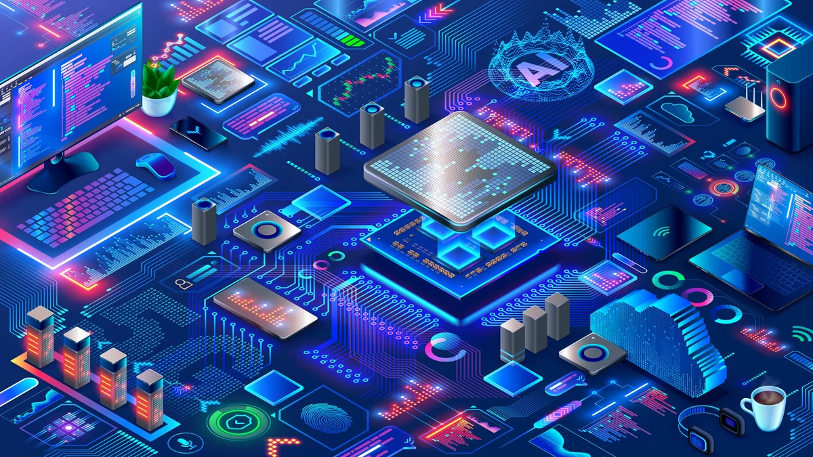

Hardware
 Hardware é todo e qualquer componente ou equipamento físico, tanto dentro quanto fora da Tecnologia da Informação. De uma maneira geral, qualquer máquina, ferramenta ou utensílio, de uma máquina de fresa a uma chave-inglesa, passando pelo seu celular ou computador é um hardware. Talheres, peças, dobradiças, engrenagens, parafusos, chips, processadores, tudo isso é hardware. Em Tecnologia da Informação, o conceito se aplica aos componentes de dispositivos em geral, como processador, placa-mãe, memória RAM, unidades de armazenamento (HDs, SSDs e memória Flash), bem como a dispositivos de entrada e saída (teclado, mouse, monitor, caixas de som, controle remoto, controle de videogame, etc). Em geral, o termo é usado para se referir aos componentes internos de um computador, celular, tablet e outros dispositivos. Eles precisam de softwares para serem operados, mas são elementos distintos. Sobre isso, uma antiga piada em TI separa bem o software do hardware: “software é o que você xinga. Hardware é o que você chuta”. Sem um software é impossível fazer um hardware funcionar, da mesma forma que não é possível usar um software sem o hardware adequado, para o qual ele foi desenvolvido.
 Os HDs, ou discos rígidos (também conhecido como “Winchesters”, porque os primeiros tinham duas faces de
30 polegadas, e foram chamados de “3030”, o mesmo apelido usado para os rifles Winchester, por causa do
calibre dos mesmos) utilizam basicamente a mesma tecnologia desde 1956, quando o IBM 350 (um monstro de
uma tonelada e incríveis 5 MB de capacidade) foi introduzido: conta com discos móveis, utilizados para
armazenar os dados, e um braço mecânico, que faz a leitura e escrita.
Os HDs, ou discos rígidos (também conhecido como “Winchesters”, porque os primeiros tinham duas faces de
30 polegadas, e foram chamados de “3030”, o mesmo apelido usado para os rifles Winchester, por causa do
calibre dos mesmos) utilizam basicamente a mesma tecnologia desde 1956, quando o IBM 350 (um monstro de
uma tonelada e incríveis 5 MB de capacidade) foi introduzido: conta com discos móveis, utilizados para
armazenar os dados, e um braço mecânico, que faz a leitura e escrita. O processador é a unidade central de processamento de um computador (CPU), que funciona como o cérebro
do computador, pois interage e faz as conexões necessárias entre todos os programas instalados.
Neste processo, ele também interpreta as informações enviadas pelos programas, realiza diversas
operações, inclusive gerando a interface que nós interagimos quando usamos um computador.
Os processadores são colocados na Placa-Mãe, por soquetes, e sua estrutura é composta por bilhões de
transistores.
O processador é a unidade central de processamento de um computador (CPU), que funciona como o cérebro
do computador, pois interage e faz as conexões necessárias entre todos os programas instalados.
Neste processo, ele também interpreta as informações enviadas pelos programas, realiza diversas
operações, inclusive gerando a interface que nós interagimos quando usamos um computador.
Os processadores são colocados na Placa-Mãe, por soquetes, e sua estrutura é composta por bilhões de
transistores.
 Placa de vídeo, também chamada placa gráfica[1] ou aceleradora gráfica,[2] é uma placa de expansão que
gera uma saída de alimentação de imagens para um dispositivo de exibição (como um monitor de
computador). É responsável por gerar e renderizar gráficos tanto 2D quanto 3D. Frequentemente, estas são
anunciadas como placas gráficas discretas ou dedicadas, enfatizando a distinção entre elas e as placas
gráficas integradas.
A maioria das placas gráficas não se limita à simples saída de exibição. Seu processador gráfico
integrado (GPU) pode realizar processamento adicional, removendo esta tarefa do processador central do
computador.[3] Por exemplo, Nvidia e AMD (anteriormente ATI) produziram placas que tornam os dutos
gráficos OpenGL e DirectX no nível de hardware.[4] Nos últimos anos da década de 2010, houve também uma
tendência de usar as capacidades computacionais do processador gráfico para resolver tarefas
não-gráficas, o que pode ser feito através do uso de OpenCL e CUDA. As placas gráficas são usadas
extensivamente para treinamento IA, mineração de moedas criptográficas e simulação molecular.
Placa de vídeo, também chamada placa gráfica[1] ou aceleradora gráfica,[2] é uma placa de expansão que
gera uma saída de alimentação de imagens para um dispositivo de exibição (como um monitor de
computador). É responsável por gerar e renderizar gráficos tanto 2D quanto 3D. Frequentemente, estas são
anunciadas como placas gráficas discretas ou dedicadas, enfatizando a distinção entre elas e as placas
gráficas integradas.
A maioria das placas gráficas não se limita à simples saída de exibição. Seu processador gráfico
integrado (GPU) pode realizar processamento adicional, removendo esta tarefa do processador central do
computador.[3] Por exemplo, Nvidia e AMD (anteriormente ATI) produziram placas que tornam os dutos
gráficos OpenGL e DirectX no nível de hardware.[4] Nos últimos anos da década de 2010, houve também uma
tendência de usar as capacidades computacionais do processador gráfico para resolver tarefas
não-gráficas, o que pode ser feito através do uso de OpenCL e CUDA. As placas gráficas são usadas
extensivamente para treinamento IA, mineração de moedas criptográficas e simulação molecular.